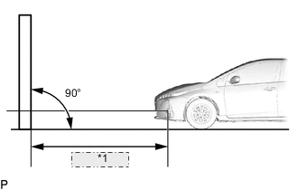
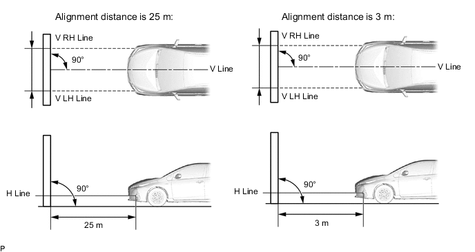
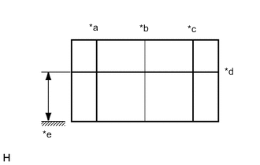
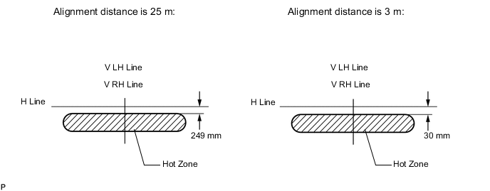
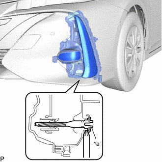

CAUTION / NOTICE / HINT
Tech Tips
Use the same procedure for the RH side and LH side.
The following procedure is for the LH side.
PROCEDURE
PREPARE VEHICLE FOR FOG LIGHT AIM ADJUSTMENT
Prepare the vehicle:
Ensure that there is no damage or deformation to the vehicle body around the fog lights.
Fill the fuel tank.
Make sure that the oil is filled to the specified level.
Make sure that the engine coolant is filled to the specified level.
Inflate the tires to the appropriate pressure.
Unload the trunk and vehicle, ensuring that the spare tire, tools and jack are in their original positions.
Bounce the vehicle at the corners up and down to stabilize the suspension.
Sit a person of average weight (75 kg, 165 lb) in the driver's seat.
PREPARE FOR FOG LIGHT AIMING

| *1 | 25 m or 3 m |
Prepare the vehicle:
Place the vehicle in a location that is dark enough to clearly observe the cutoff line. The cutoff line is a distinct line, below which light from the fog lights can be observed and above which it cannot.
Place the vehicle at a 90° angle to the wall.
Create a 25 m (82 ft.) distance between the vehicle (fog light center mark) and the wall.
Make sure that the vehicle is on a level surface.
Position the front wheels straight ahead.
Bounce the vehicle up and down to settle the suspension.
Note
A distance of 25 m (82 ft.) between the vehicle (fog light center mark) and the wall is necessary for proper aim adjustment. If sufficient space is not available, secure a distance of exactly 3 m (9.84 ft.) to allow for checking and adjustment of fog light aim. (The size of the target zone will change with the distance, so follow the instructions in the illustration.)
Prepare a piece of thick white paper (approximately 2 m (6.56 ft.) (height) x 4 m (13.1 ft.) (width)) to use as a screen.
Draw a vertical line down the center of the screen (V line).
Set the screen as shown in the illustration:

Tech Tips
Stand the screen perpendicular to the ground.
Align the V line on the screen with the center of the vehicle.

| *a | V LH Line |
| *b | V Line |
| *c | V RH Line |
| *d | H Line |
| *e | Ground |
Draw base lines (H, V LH, and V RH lines) on the screen as shown in the illustration.
Tech Tips
Mark the fog light center marks on the screen.
H Line (Fog light height):
Draw a horizontal line across the screen so that it passes through the center marks. The H line should be at the same height as the fog light center marks.
V LH Line, V RH Line (Center mark position of left-hand (LH) and right-hand (RH) fog lights):
Draw 2 vertical lines so that they intersect the H line at each center mark (aligned with the center mark of the fog lights).
INSPECT FOG LIGHT AIMING
Cover the fog light or disconnect the connector of the fog light on the opposite side to prevent light from the fog light that is not being inspected from affecting the fog light aiming inspection.
Start the engine.
Turn on the fog lights and check if the upper edge of the hot zone for each fog light matches the upper edge as shown in the illustration:

Tech Tips
If the alignment distance is 25 m (82 ft.):
The upper edge of the hot zone for the fog light should be 249 mm (9.80 in.) below the H line.
If the alignment distance is 3 m (9.84 ft.):
The upper edge of the hot zone for the fog light should be 30 mm (1.18 in.) below the H line.
ADJUST FOG LIGHT AIMING

| *a | Aiming Screw |
Adjust the aim vertically:
Adjust the aim of each fog light to the specified range by turning each aiming screw with a screwdriver.
Note
The final turn of the aiming screw should be made in the clockwise direction. If the screw is tightened excessively, loosen it and then retighten it, so that the final turn of the screw is in the clockwise direction.
Tech Tips
If it is not possible to correctly adjust the fog light aim, check the fog light assembly.